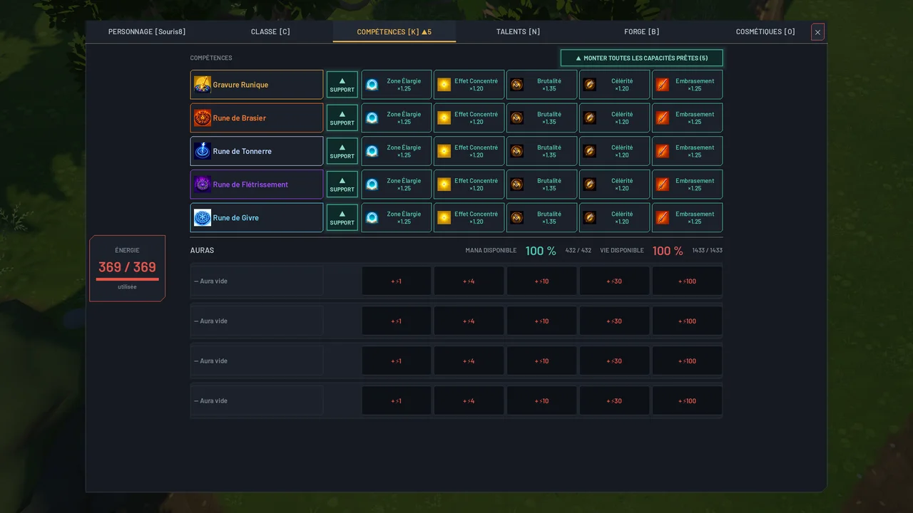
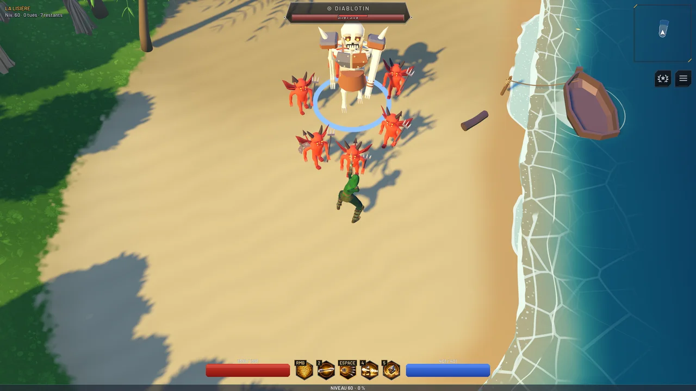

News
Every release presented, with its patch notes.
 0.8.0
0.8.0Blades, beams, auction house and the Ink league
Two melee families and your shadows, channelled beams, an auction house, the Ink league and the game in English.
 0.7.0
0.7.0The Runecarver, leagues and the Castle
The Runecarver, space invasions, glitched rifts and the Blood Castle as act II.
 0.6.5
0.6.5Living monsters, fearsome bosses and out into daylight
The monsters of the first levels move like real creatures, every boss has its own attacks and the catacombs lead out into the open.
 0.6.4
0.6.4Cemetery, catacombs and a new forge
The Verdeclat forest remade, a cemetery in the rain, bone catacombs, auto-crafting at the forge and a campaign up to level 55.
 0.6.3
0.6.3Bestiaries and depths
A handmade bestiary for every act, scenery that comes alive, three acts in early access and real archery.
 0.6.2
0.6.2Bones, storms and a big clean-up
The Summoner gets a real army, the world gains rain, storms and night, and the talents are rebuilt.
 0.6.1
0.6.1Embers and sea spray
Fire rethought from top to bottom, real music, recorded ambiences and spells that chain freely.
 0.6.0
0.6.0The Wreckers' Coast
A fourth act by the sea, a remade island, attributes, rethought talent trees and a new title screen.
 0.5.0
0.5.0The ash forge
The forge remade from top to bottom, a single starting skill per class and icons that stay sharp at every scale.
 0.4.0
0.4.0Three acts, fifteen dungeons
A three-act campaign with fifteen dungeons, readable enemy attacks and a palette for each class.
 0.3.0
0.3.0Lands, legendaries and a visual overhaul
Eight playable classes, thirty more legendaries, the Tree of the Lands and a new main menu.

0.2.0Channelling, forge and comfort
The Summoner, stacking channelling, a reworked Whirlwind and a clearer forge.

0.1.0First playable version
The first playable version: a campaign in the Verdeclat forest, three classes, eleven talent trees and the forge.